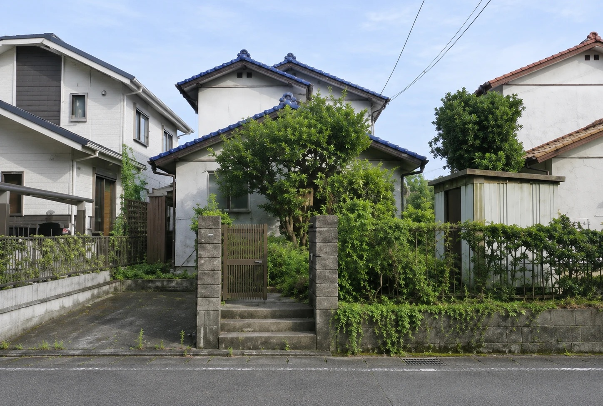
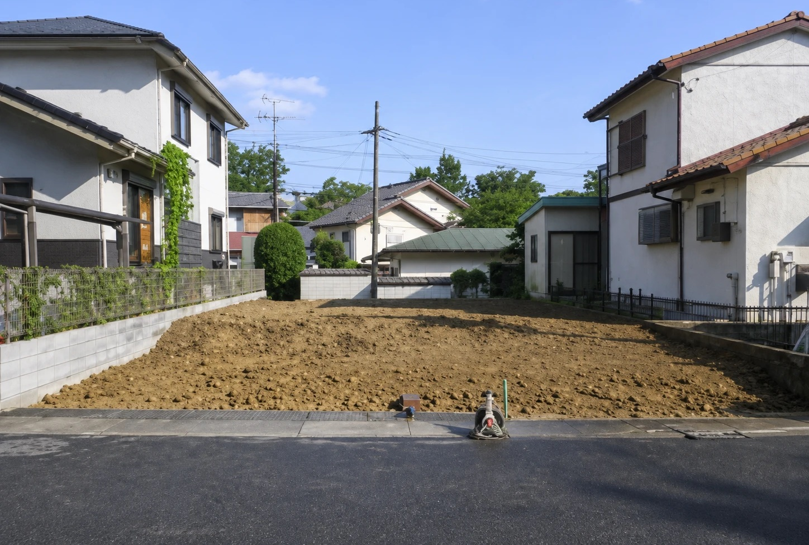
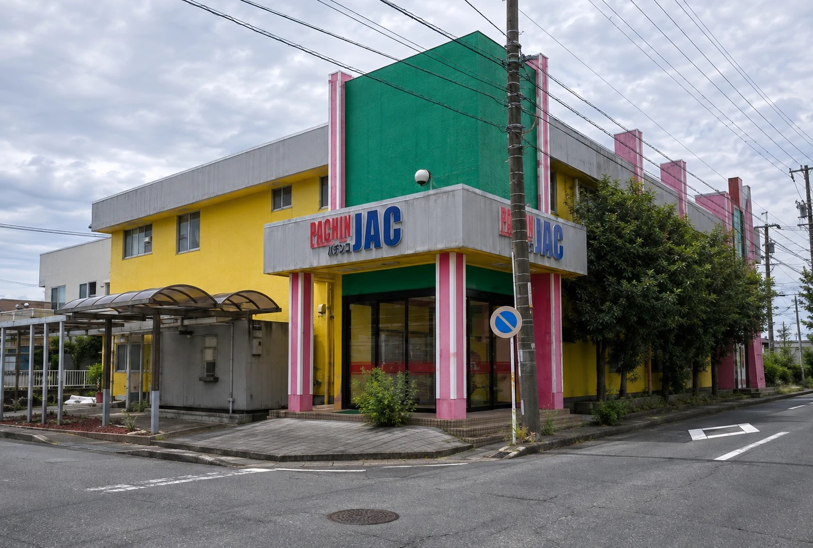
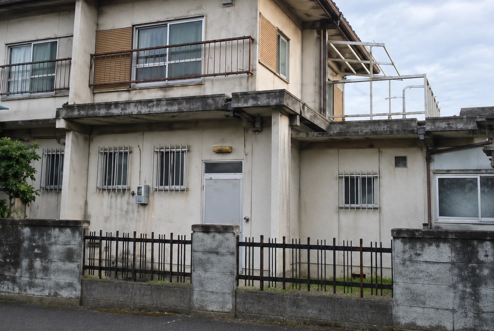
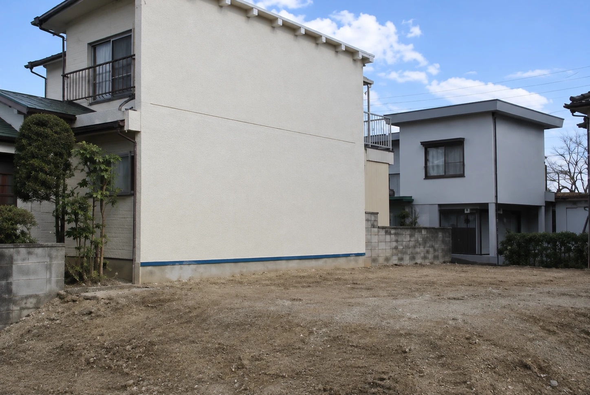

写真はイメージです
丸信の解体工事について
当社は愛知県春日井市を中心に解体工事を承っています。
木造住宅、鉄骨建築、鉄筋コンクリート造や、テナント事務所・店舗など、建築様式を問わず解体工事が可能です。
OUR COMMITMENT
解体の前も、後も。
安心につながる、丸信の取り組み。
ご相談から工事完了後まで、
一つひとつ、誠実に対応します。
解体専門の会社に、
直接相談。地域に根付いた解体専門の会社です。下請業者への発注による中間マージンが発生しません。
着工前から、
近隣に配慮。工事前には、近隣の皆様へ丁寧にご挨拶。万が一のトラブルにも、速やかに対応いたします。
工事が終わっても、
丁寧に。工事完了後も、改めてご近所へご挨拶。ご迷惑がなかったかを確認することまで、大切にしています。
WORKS
施工事例
丸信が手がけた解体工事を、
施工前・施工後の写真でご紹介します。
01
木造
施工前 
施工後 愛知県名古屋市守山区
F様邸 解体工事
02
鉄骨造
施工前 
施工後 愛知県春日井市
某パチンコ店 解体工事
03
鉄筋コンクリート造
施工前 
施工後 愛知県瀬戸市
K様邸 解体工事
※補修工事共
FLOW
ご相談から工事完了まで。
ご相談から工事完了後のご挨拶まで、一つひとつ丁寧に進めます。
STEP01
ご相談・お見積もり
ご相談・お見積もり依頼から、お見積もりのご提出まで。
STEP02
ご契約・着工準備
ご契約、アスベスト事前調査、届出、近隣へのご挨拶。
STEP03
解体工事
着工から、廃材の分別・搬出まで。
STEP04
整地・工事完了
整地・完了後、近隣へ改めてご挨拶。
対応エリア
- 愛知県
- 春日井市・名古屋市・小牧市・尾張旭市・瀬戸市・長久手市・北名古屋市など
- 三重県
- 桑名市・四日市市・いなべ市など
- 岐阜県
- 岐阜市・羽島市・可児市・多治見市など
※春日井市より車で1時間半のエリア内
上記の対応エリア以外にも柔軟に対応させていただきます。まずはお気軽にお問い合わせください。
よくある質問
見積もり依頼は無料ですか？
もちろん、お見積もりは無料です。
スピード対応でお待たせせず、お客様にわかりやすいお見積もりをご提供いたします。
お見積もりは当ホームページのお問い合わせフォームから、もしくはお電話（0568-29-7788）よりお気軽にお申し付けください。
対応エリアを教えてください。
当社は愛知県春日井市を中心に解体工事を承っています。主な対応エリアは下記の通りです。
- 【愛知県】春日井市・名古屋市・小牧市・尾張旭市・瀬戸市・長久手市・北名古屋市など
- 【三重県】桑名市・四日市市・いなべ市など
- 【岐阜県】岐阜市・羽島市・可児市・多治見市など
※春日井市より車で1時間半のエリア内
上記の対応エリア以外にも柔軟に対応させていただきます。まずはお気軽にお問い合わせください。
植木や庭石・石垣等も処分してもらえるのですか？
一般的なゴミとして廃棄ができない植木や庭石・石垣等は処分に困ります。
当社では、植木や庭石・石垣等も有料になりますが処分いたします。
植木や庭石・石垣等の処分についてもお気軽にご相談ください。
樹木のみの撤去や駐車場のアスファルトのみの撤去等も行って頂けますか？
樹木・雑木林のみの撤去や駐車場のアスファルトのみの撤去といった、撤去のみの解体工事についても行わせていただいております。
各種撤去についてもお気軽にご相談ください。
ビル・マンションや工場などの解体もお願いできますか？
当社ではビル・マンションや工場等についても解体工事の実績が多数ございます。
ビル・マンションや工場等の解体工事を検討されるのであれば、まずはお気軽にご相談ください。